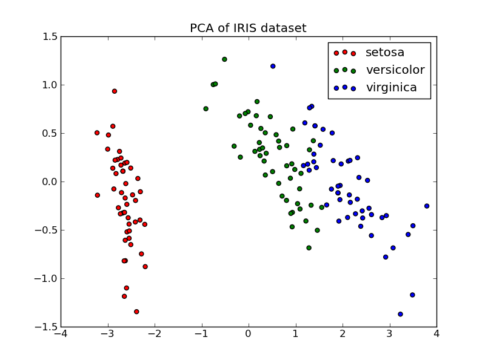

PCA 2d projection of of Iris dataset¶
The Iris dataset represents 3 kind of Iris flowers (Setosa, Versicolour and Virginica) with 4 attributes: sepal length, sepal width, petal length and petal width.
Principal Component Analysis (PCA) applied to this data identifies the combination of attributes (principal components, or directions in the feature space) that account for the most variance in the data. Here we plot the different samples on the 2 first principal components.

Python source code: plot_pca.py
print __doc__
import pylab as pl
from scikits.learn import datasets
from scikits.learn.pca import PCA
iris = datasets.load_iris()
X = iris.data
y = iris.target
target_names = iris.target_names
pca = PCA(n_components=2)
X_r = pca.fit(X).transform(X)
# Percentage of variance explained for each components
print pca.explained_variance_
pl.figure()
for c, i, target_name in zip("rgb", [0, 1, 2], target_names):
pl.scatter(X_r[y==i,0], X_r[y==i,1], c=c, label=target_name)
pl.legend()
pl.title('PCA of IRIS dataset')
pl.show()